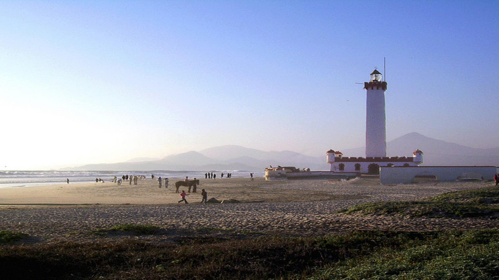
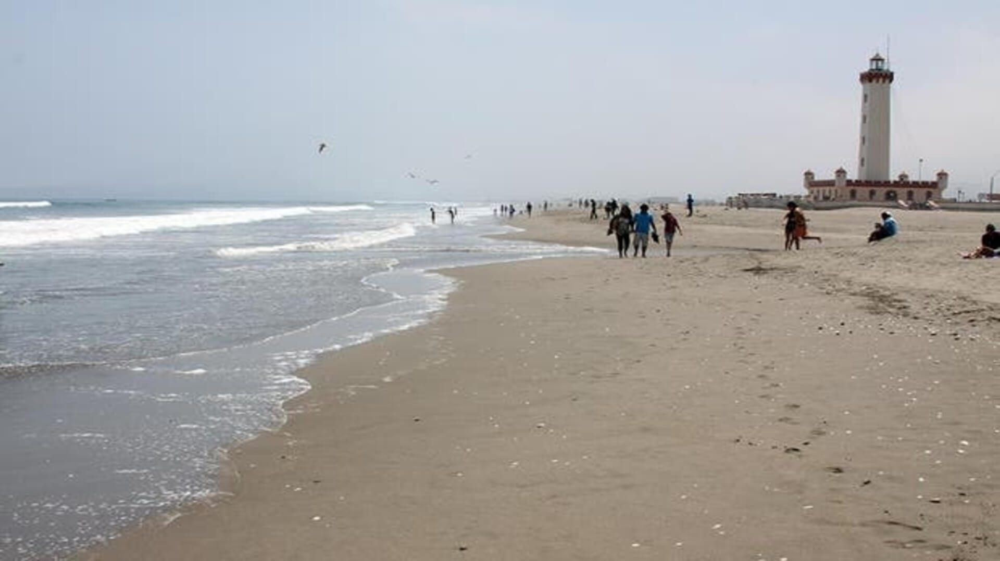
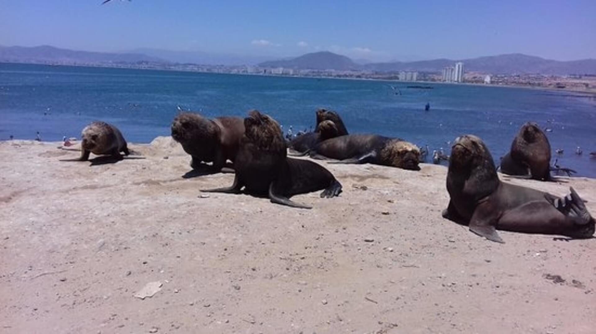

Playa El Faro es la primera de las 12 playas que se desarrollan en la concurrida avenida del Mar, construida en los Ochenta a lo largo de 6 kilómetros de costa para incentivar el boom de las construcciones costeras y el turismo desde La Serena hacia el sur, en dirección Coquimbo. El sector de la Playa El Faro, el más cercano al centro de La Serena, cuenta con excelentes implementaciones turísticas y sus mansas aguas permiten bañarse.
Ubicado en la principal avenida de la ciudad, a pasos del centro y a 15 minutos del aeropuerto.
Burger Club, acogedor local atendido por sus propios dueños, ven a deleitarte con las mejores Hamburguesas.